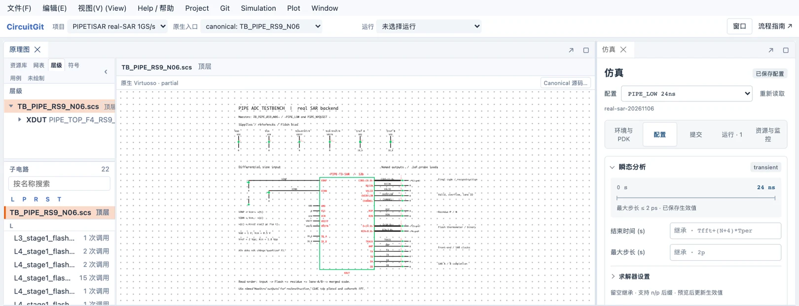
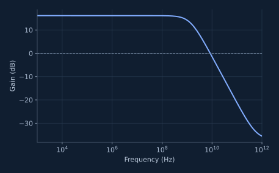

SpiceOwl / A VISUAL FIELD GUIDE
让每一次仿真，
都有据可查。
从服务器和 PDK，到运行状态、原始波形与测量结果。SpiceOwl 把这些证据接到 Agent 对话中，帮助你判断下一步。
CIRCUIT → EXPERIMENT → EVIDENCE
流程信号示意 · 实测图见下方从源码到可复核的结果
2 个电路 · 3 次运行2026-11-24 原始 Spectre 结果的脱敏派生展示
1 GS/s自举采样保持测试 · 4,096 点 FFT
TRAN / DC / AC反相器时域、传输曲线和小信号增益
SpiceOwl 管理资源、依赖和分析；CircuitGit Runner 负责执行。 点击任一阶段，查看人的操作、Agent 的帮助和保存下来的结果。
把电路和问题放在一起
从 Library 选择电路，确认端口、源版本和测试目标。自举开关的 VBST 是栅压控制输出；真正做频谱分析的是测试平台中的 VOUT。
你的操作选择 DUT 与目标
→工具留下源版本 + 端口身份
INSIDE THE WORKBENCH
电路和实验，放在同一张桌面上。
左侧按层级阅读电路；右侧选择测试配置。源文件、运行记录和信号身份连接起编辑与分析。

真实工作台截图，显示 PIPETISAR 顶层作为 UI 示例，并非下方 Bootstrap 补跑的画面。此截屏未选择波形运行；原生结果图在下一节独立呈现。RNL：源与原理图CircuitGit：配置、执行、记录SpiceOwl：资源、诊断、分析
REAL CIRCUITS, REAL TRACES
从电路图，读到仿真结果。
先看连接，再看激励，最后看结果。两个电路各自保留测试条件；切换只改变展示内容。
测试平台连接图。DUT 为公开 RS9_L5_9bit_Bootstrap；外接 MSAMPLE 与 100 fF 保持电容。此图是连接关系重绘，完整晶体管源码见下方详情。EXPERIMENT SETUP
只改采样管的并联倍数
- 采样时钟
- 1 GHz · 230 ps 高电平
- 输入信号
- 442.138671875 MHz
- 电源 / 输入振幅
- 1 V / 0.45 V peak
- 采样 / 温度
- 4,096 点 / 27 °C
同一自举 DUT、同一负载。外接 MSAMPLE 从 multi=1 改为 multi=16；每个单元 W = 0.5 μm，L = 30 nm。
这是模拟采样保持输出测试。没有量化器，未开启瞬态噪声，也未覆盖 PVT、寄生或完整 ADC。
改变尺寸之后，频谱发生了什么？
独立复算原生 PSF 的 4,096 个采样点；两次运行使用相同的频率、矩形窗和频谱定义。
SNDR · dB33.44 → 57.57信号与剩余频谱功率之比
SFDR · dBc34.89 → 57.85最大杂散相对基波
SNDR 换算位数5.26 → 9.27等效值；不代表 ADC 实测 ENOB
橙色 · multi = 1青色 · multi = 16
 fS = 1 GHz，基波在第 1811 bin；0 dBFS 参考 0.45 V peak。显示下限 −140 dBFS。低频谱残差不等于物理热噪声底。
fS = 1 GHz，基波在第 1811 bin；0 dBFS 参考 0.45 V peak。显示下限 −140 dBFS。低频谱残差不等于物理热噪声底。同一运行的时域证据
 multi = 16：CLK、VIN / VOUT、VBST / VGS，截取 64–70 ns。波形为显示而降采样；FFT 使用完整采样序列。
multi = 16：CLK、VIN / VOUT、VBST / VGS，截取 64–70 ns。波形为显示而降采样；FFT 使用完整采样序列。CMOS_INVERTER 晶体管连接图：M10 上拉、M9 下拉，共用输入 CLK，输出 CLKN 接 10 fF 负载。是电路图重绘，不是版图。A SMALLER COMPLETE EXAMPLE
一个反相器，三种分析视角
- 电源 / 负载
- 0.9 V / 10 fF
- 瞬态输入
- 1 ns 周期 · 20 ps 边沿
- DC 扫描
- 0–0.9 V · 10 mV 步长
- AC 偏置
- 0.435 V · 27 °C
瞬态显示翻转；DC 曲线显示输入输出关系；AC 描述指定偏置附近的小信号增益。
AC 图给出开环电压增益幅值。这里没有定义反馈环路，因此不展示“相位裕度”结论。
翻转、阈值、带宽：各用各的证据。
tPHL / tPLH22.60 / 28.91ps · 原始波形 50% 交叉复算
DC 交点0.415 V10 mV 扫描步长下的近似值
低频增益幅值16.15 dB输入偏置 0.435 V
 蓝色为输出，青色为输入。对同一个转换事件配对计算传播延时，不能只比较两条曲线的峰值。
蓝色为输出，青色为输入。对同一个转换事件配对计算传播延时，不能只比较两条曲线的峰值。 DC：VOUT(VIN) 与 VOUT = VIN 参考线。
DC：VOUT(VIN) 与 VOUT = VIN 参考线。
AC：1 kHz–1 THz，对数频率轴；幅值过零约 8.47 GHz。SIMULATION MANAGEMENT
运行结束，与指标达标，是两件事。
SpiceOwl 分开记录连接观测、执行、测量有效性和规格结论。发生断连时，先保留运行身份，再恢复观测。
本页补跑的证据链
原生归档记录退出码 0；随后离线复算频谱。原向导没有收到这次补跑的成功回执，规格检查也未自动标记通过。
执行证据exit code 0
测量证据FFT 已复算
规格结论未正式评判
如果连接中断：观测可以是 unknown，求解器仍可能正在运行。查询原 run 的状态后再决定后续操作；页面和 Agent 回答都不能直接证明重提是安全的。
ONE ENGINE, TWO WAYS TO WORK
独立用，或嵌入同一个对话。
对话窗口决定交互入口；SpiceOwl 提供仿真管理与分析工具。电路源、执行身份和结果归档保持明确的归属。
SpiceOwl 独立使用你 · SpiceOwl 的 Agent 窗口
显式连接本机 Codex app-serverSpiceOwl · 资源 / PDK / 诊断 / 分析
需要执行时，绑定已配置的服务操作员绑定的 CircuitGit Service / Runner
独立控制台拥有自己的对话。仅安装或打开页面不会启动模型；仿真执行仍依赖已配置的后端。
CircuitGit 中使用 SpiceOwl你 · CircuitGit 已有 Agent 窗口
同一会话注入电路与仿真工具RNL 原理图 + SpiceOwl 子模块工具
复用现有源身份、审核与执行管理CircuitGit 现有 Service / Runner
仿真面板把上下文交给当前对话；嵌入模式不再启动第二个 Agent，也不创建第二套执行记录。
WHAT THE EVIDENCE ACTUALLY SHOWS
让每一个结论都有出处。
本页已经核对
- 3 份原始结果归档均记录求解器退出码 0。
- 两组 4,096 点 PSF 波形重新解析，独立 rFFT 复算与原 SNDR / SFDR 相差小于 0.01 dB。
- 波形、DC 与 AC 图来自原生数据；截图来自实际工作台，聊天区已裁除。
本页没有证明
- 补跑走的是单独 Runner 路径，不能将它当成原向导审核成功的回执。
- 原向导 revision 10 的历史快照仍是待审核；Provider 推理、自动恢复和完整 UI 闭环未由这些图验证。
- 没有芯片测试、完整 ADC 指标、PVT / 噪声 / 版图后仿真认证。